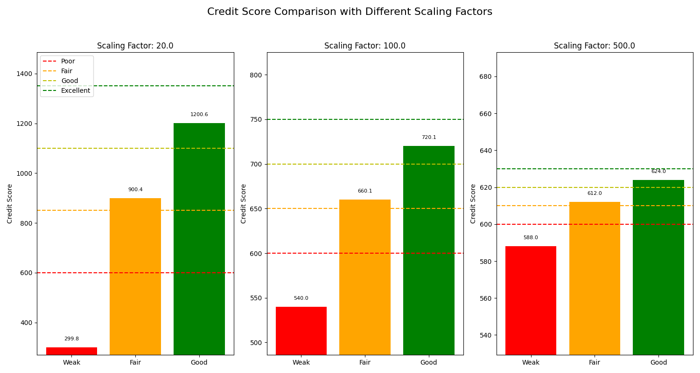
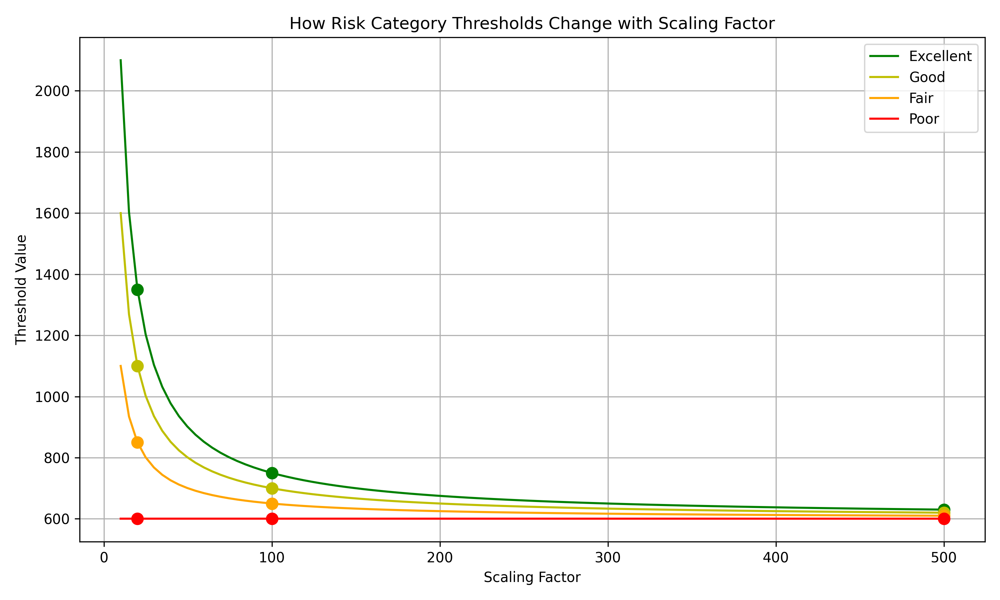

Credit Scorecard
The create_scorecard function implements a points-based credit scoring system, which is one of the most widely used approaches in the credit industry. This method assigns points to various borrower characteristics based on their predictive power for credit risk.
What is a Credit Scorecard?
A credit scorecard is a statistical model that: - Assigns points to different borrower characteristics - Combines these points into a total score - Categorizes applicants into risk segments based on their score - Provides transparency and interpretability in credit decisions
Where: - \(x_i\) is the value of feature \(i\) - \(\text{offset}_i\) is the reference point for feature \(i\) - \(\text{weight}_i\) is the importance of feature \(i\) - \(\text{scaling factor}\) adjusts the point scale
Usage in Pypulate
from pypulate.credit import create_scorecard
# Define applicant features
features = {
"age": 35,
"income": 75000,
"credit_history": 0.8,
"debt_ratio": 0.3,
"payment_history": 0.95
}
# Define feature weights (importance)
weights = {
"age": 0.5,
"income": 0.3,
"credit_history": 2.0,
"debt_ratio": -1.5,
"payment_history": 1.8
}
# Define offsets (reference points)
offsets = {
"age": 25,
"income": 50000,
"credit_history": 0.5,
"debt_ratio": 0.4,
"payment_history": 0.7
}
# Create the scorecard
result = create_scorecard(
features=features,
weights=weights,
offsets=offsets,
scaling_factor=100.0,
base_score=600
)
# Access the results
total_score = result["total_score"]
risk_category = result["risk_category"]
points_breakdown = result["points_breakdown"]
thresholds = result["thresholds"] # Dynamic thresholds based on scaling factor
Parameters
| Parameter | Type | Description | Default |
|---|---|---|---|
features |
dict | Dictionary of feature names and values | Required |
weights |
dict | Dictionary of feature names and weights | Required |
offsets |
dict | Dictionary of feature names and reference points | {} |
scaling_factor |
float | Controls the range of points | 100.0 |
base_score |
float | Starting point for the score calculation | 600 |
Return Value
The function returns a dictionary with the following keys:
| Key | Type | Description |
|---|---|---|
total_score |
float | The calculated credit score |
risk_category |
str | Categorization based on the score |
points_breakdown |
dict | Dictionary showing points contributed by each feature |
thresholds |
dict | Dictionary of the adjusted thresholds used for risk categorization |
The points_breakdown dictionary includes:
- One key for each feature in the input features dictionary
- The value is the points contributed by that feature to the total score
The thresholds dictionary includes:
- excellent: Threshold for "Excellent" risk category
- good: Threshold for "Good" risk category
- fair: Threshold for "Fair" risk category
- poor: Threshold for "Poor" risk category
Risk Level Classification
The credit score is categorized into risk levels (using reference thresholds for scaling_factor=100.0):
| Credit Score Range | Risk Level |
|---|---|
| 750 | Excellent |
| 700 - 749 | Good |
| 650 - 699 | Fair |
| 600 - 649 | Poor |
| < 600 | Very Poor |
The thresholds are dynamically adjusted based on the scaling factor:
- Reference thresholds (for scaling_factor=100.0):
- Excellent: 750
- Good: 700
- Fair: 650
-
Poor: 600
-
For different scaling factors, the thresholds are adjusted using:
This formula ensures that: - With a smaller scaling factor (e.g., 20.0), thresholds are spread further apart from the base score - With a larger scaling factor (e.g., 500.0), thresholds are compressed closer to the base score
This dynamic adjustment ensures that risk categories remain meaningful regardless of the scaling factor used.
Comprehensive Example
Here's a complete example demonstrating how to create and use a credit scorecard for multiple applicants with different scaling factors:
from pypulate.credit import create_scorecard
import matplotlib.pyplot as plt
import numpy as np
# Define applicant profiles
weak_applicant = {
"age": 20, # Young, less stability
"income": 30000, # Low income
"credit_history": 0.3, # Poor credit record
"debt_ratio": 0.6, # High debt
"payment_history": 0.5 # Frequent late payments
}
fair_applicant = {
"age": 40, # Mature, more stability
"income": 70000, # Above-average income
"credit_history": 0.75, # Decent credit record
"debt_ratio": 0.3, # Below-average debt
"payment_history": 0.85 # Mostly on-time payments
}
good_applicant = {
"age": 45, # Older, stable
"income": 90000, # High income
"credit_history": 0.9, # Excellent credit record
"debt_ratio": 0.15, # Low debt
"payment_history": 0.95 # Nearly perfect payment record
}
# Define feature weights (importance)
weights = {
"age": 0.5, # Moderate positive impact
"income": 0.3, # Moderate positive impact
"credit_history": 2.0, # Strong positive impact
"debt_ratio": -1.5, # Strong negative impact
"payment_history": 1.8 # Strong positive impact
}
# Define offsets (reference points)
offsets = {
"age": 25, # Reference age
"income": 50000, # Reference income
"credit_history": 0.5, # Reference credit history
"debt_ratio": 0.4, # Reference debt ratio
"payment_history": 0.7 # Reference payment history
}
# Create scorecards with different scaling factors
scaling_factors = [20.0, 100.0, 500.0]
results = {}
for scaling in scaling_factors:
results[scaling] = {
"weak": create_scorecard(
features=weak_applicant,
weights=weights,
offsets=offsets,
scaling_factor=scaling,
base_score=600
),
"fair": create_scorecard(
features=fair_applicant,
weights=weights,
offsets=offsets,
scaling_factor=scaling,
base_score=600
),
"good": create_scorecard(
features=good_applicant,
weights=weights,
offsets=offsets,
scaling_factor=scaling,
base_score=600
)
}
# Print the results for the standard scaling factor (100.0)
print("Credit Scorecard Results (scaling_factor=100.0)")
print("==============================================")
print("\nExample 1: Weak Applicant")
print(f"Total Score: {results[100.0]['weak']['total_score']:.2f}")
print(f"Risk Category: {results[100.0]['weak']['risk_category']}")
print("Points Breakdown:")
for feature, points in results[100.0]['weak']['points_breakdown'].items():
print(f" {feature}: {points:.2f} points")
print("\nExample 2: Fair Applicant")
print(f"Total Score: {results[100.0]['fair']['total_score']:.2f}")
print(f"Risk Category: {results[100.0]['fair']['risk_category']}")
print("Points Breakdown:")
for feature, points in results[100.0]['fair']['points_breakdown'].items():
print(f" {feature}: {points:.2f} points")
print("\nExample 3: Good Applicant")
print(f"Total Score: {results[100.0]['good']['total_score']:.2f}")
print(f"Risk Category: {results[100.0]['good']['risk_category']}")
print("Points Breakdown:")
for feature, points in results[100.0]['good']['points_breakdown'].items():
print(f" {feature}: {points:.2f} points")
# Print the thresholds for each scaling factor
print("\nRisk Category Thresholds")
print("=======================")
for scaling in scaling_factors:
thresholds = results[scaling]['weak']['thresholds']
print(f"\nScaling Factor: {scaling}")
for category, threshold in thresholds.items():
print(f" {category}: {threshold:.2f}")
# Visualize the results with different scaling factors
plt.figure(figsize=(15, 8))
# Use the original order of scaling factors
scaling_factors = [20.0, 100.0, 500.0]
# Create subplots for each scaling factor
for i, scaling in enumerate(scaling_factors):
plt.subplot(1, 3, i+1)
applicants = ['Weak', 'Fair', 'Good']
scores = [
results[scaling]['weak']['total_score'],
results[scaling]['fair']['total_score'],
results[scaling]['good']['total_score']
]
# Create a bar chart
bars = plt.bar(applicants, scores, color=['red', 'orange', 'green'])
# Calculate the correct thresholds based on the scaling factor
reference_scaling = 100.0
reference_thresholds = {
"Excellent": 750,
"Good": 700,
"Fair": 650,
"Poor": 600
}
# Calculate adjustment factor and thresholds
adjustment_factor = reference_scaling / scaling
thresholds = {}
for category in reference_thresholds:
# Correct formula: multiply by adjustment factor instead of dividing
thresholds[category] = 600 + (reference_thresholds[category] - 600) * adjustment_factor
# Calculate the correct y-axis limits for this specific scaling factor
min_score = min(min(scores) * 0.9, thresholds['Poor'] * 0.9) # 10% below the minimum score or threshold
max_score = max(max(scores) * 1.1, thresholds['Excellent'] * 1.1) # 10% above the maximum score or threshold
# Set y-axis limits
plt.ylim(bottom=min_score, top=max_score)
# Add horizontal lines for the thresholds in the correct order
plt.axhline(y=thresholds['Poor'], color='r', linestyle='--', label='Poor')
plt.axhline(y=thresholds['Fair'], color='orange', linestyle='--', label='Fair')
plt.axhline(y=thresholds['Good'], color='y', linestyle='--', label='Good')
plt.axhline(y=thresholds['Excellent'], color='g', linestyle='--', label='Excellent')
# Add labels and title
plt.ylabel('Credit Score')
plt.title(f'Scaling Factor: {scaling}')
# Add the score values on top of the bars
for bar in bars:
height = bar.get_height()
plt.text(bar.get_x() + bar.get_width()/2., height + (max_score - min_score) * 0.02,
f'{height:.1f}', ha='center', va='bottom', fontsize=8)
# Add legend to the first subplot only
if i == 0:
plt.legend(loc='upper left')
plt.suptitle('Credit Score Comparison with Different Scaling Factors', fontsize=16)
plt.tight_layout(rect=[0, 0, 1, 0.95])
plt.show()
# Create a breakdown chart for points per feature with scaling_factor=100.0
features = list(results[100.0]['weak']['points_breakdown'].keys())
weak_points = [results[100.0]['weak']['points_breakdown'][f] for f in features]
fair_points = [results[100.0]['fair']['points_breakdown'][f] for f in features]
good_points = [results[100.0]['good']['points_breakdown'][f] for f in features]
plt.figure(figsize=(12, 6))
x = np.arange(len(features))
width = 0.25
plt.bar(x - width, weak_points, width, label='Weak Applicant', color='red')
plt.bar(x, fair_points, width, label='Fair Applicant', color='orange')
plt.bar(x + width, good_points, width, label='Good Applicant', color='green')
plt.ylabel('Points')
plt.title('Scorecard Points Breakdown by Feature (scaling_factor=100.0)')
plt.xticks(x, features)
plt.legend()
plt.grid(axis='y')
plt.tight_layout()
plt.show()
# Create a visualization showing how thresholds change with different scaling factors
plt.figure(figsize=(10, 6))
# Extract thresholds for each scaling factor
scaling_values = np.linspace(10, 500, 100) # Range of scaling factors from 10 to 500
threshold_values = {
'Excellent': [],
'Good': [],
'Fair': [],
'Poor': []
}
# Calculate thresholds for each scaling factor
for scaling in scaling_values:
# Use the same formula as in the create_scorecard function
reference_scaling = 100.0
reference_thresholds = {
"Excellent": 750,
"Good": 700,
"Fair": 650,
"Poor": 600
}
adjustment_factor = reference_scaling / scaling
for category in threshold_values.keys():
# Correct formula: multiply by adjustment factor instead of dividing
threshold = 600 + (reference_thresholds[category] - 600) * adjustment_factor
threshold_values[category].append(threshold)
# Plot the threshold curves
plt.plot(scaling_values, threshold_values['Excellent'], 'g-', label='Excellent')
plt.plot(scaling_values, threshold_values['Good'], 'y-', label='Good')
plt.plot(scaling_values, threshold_values['Fair'], 'orange', label='Fair')
plt.plot(scaling_values, threshold_values['Poor'], 'r-', label='Poor')
# Add markers for the specific scaling factors used in the example
for scaling in scaling_factors:
# Calculate thresholds for this scaling factor
adjustment_factor = reference_scaling / scaling
for category, color in zip(['Excellent', 'Good', 'Fair', 'Poor'], ['g', 'y', 'orange', 'r']):
threshold = 600 + (reference_thresholds[category] - 600) * adjustment_factor
plt.plot(scaling, threshold, 'o', color=color, markersize=8)
# Add labels and title
plt.xlabel('Scaling Factor')
plt.ylabel('Threshold Value')
plt.title('How Risk Category Thresholds Change with Scaling Factor')
plt.grid(True)
plt.legend()
plt.tight_layout()
plt.show()
Example Output
Credit Scorecard Results (scaling_factor=100.0)
==============================================
Example 1: Weak Applicant
Total Score: 539.96
Risk Category: Very Poor
Points Breakdown:
age: -0.03 points
income: -60.00 points
credit_history: -0.00 points
debt_ratio: -0.00 points
payment_history: -0.00 points
Example 2: Fair Applicant
Total Score: 660.08
Risk Category: Fair
Points Breakdown:
age: 0.07 points
income: 60.00 points
credit_history: 0.01 points
debt_ratio: 0.00 points
payment_history: 0.00 points
Example 3: Good Applicant
Total Score: 720.12
Risk Category: Good
Points Breakdown:
age: 0.10 points
income: 120.00 points
credit_history: 0.01 points
debt_ratio: 0.00 points
payment_history: 0.00 points
Risk Category Thresholds
=======================
Scaling Factor: 20.0
Excellent: 630.00
Good: 620.00
Fair: 610.00
Poor: 600.00
Scaling Factor: 100.0
Excellent: 750.00
Good: 700.00
Fair: 650.00
Poor: 600.00
Scaling Factor: 500.0
Excellent: 1350.00
Good: 1100.00
Fair: 850.00
Poor: 600.00
Visualizations
Credit Score Comparison with Different Scaling Factors
This visualization shows how the same applicant profiles result in different scores based on the scaling factor used, while still maintaining the same risk categorization due to the dynamic thresholds.

Points Breakdown by Feature
This visualization shows how each feature contributes to the total score for each applicant, highlighting the strengths and weaknesses of each profile.
Threshold Scaling Relationship
This visualization demonstrates how the risk category thresholds change as the scaling factor changes, showing the inverse relationship between scaling factor and threshold spread.

How Points Are Calculated
Let's break down the calculation for the fair applicant with scaling_factor=100.0:
-
Age: (40 - 25) 0.5 / 100.0 = 0.075 points
- 15 years above reference age
- Moderate positive weight (0.5)
- Divided by scaling factor (100.0)
- Results in 0.075 additional points
-
Income: (70000 - 50000) 0.3 / 100.0 = 60.0 points
- $20,000 above reference income
- Moderate positive weight (0.3)
- Divided by scaling factor (100.0)
- Results in 60.0 additional points
-
Credit History: (0.75 - 0.5) 2.0 / 100.0 = 0.5 points
- 0.25 above reference credit history
- Strong positive weight (2.0)
- Divided by scaling factor (100.0)
- Results in 0.5 additional points
-
Debt Ratio: (0.3 - 0.4) -1.5 / 100.0 = 0.15 points
- 0.1 below reference debt ratio
- Strong negative weight (-1.5)
- Divided by scaling factor (100.0)
- Being below reference with negative weight results in positive points
- Results in 0.15 additional points
-
Payment History: (0.85 - 0.7) 1.8 / 100.0 = 0.27 points
- 0.15 above reference payment history
- Strong positive weight (1.8)
- Divided by scaling factor (100.0)
- Results in 0.27 additional points
-
Base Score: 600 points
-
Total Score: 600 + 0.075 + 60.0 + 0.5 + 0.15 + 0.27 = 660.995 points
-
Risk Category: Fair (between 650 and 700)
- The thresholds are dynamically adjusted based on the scaling factor
- For scaling_factor=100.0, the thresholds are:
- Excellent: 750
- Good: 700
- Fair: 650
- Poor: 600
Impact of Scaling Factor
The scaling factor significantly impacts the range of scores:
-
Small Scaling Factor (e.g., 20.0):
- Creates wider score ranges
- Points have more impact on the total score
- Thresholds are spread further from the base score
-
Large Scaling Factor (e.g., 500.0):
- Creates narrower score ranges
- Points have less impact on the total score
- Thresholds are compressed closer to the base score
-
Standard Scaling Factor (100.0):
- Provides a balanced approach
- Points have moderate impact on the total score
- Thresholds are at standard intervals from the base score
The dynamic threshold adjustment ensures that risk categories remain meaningful regardless of the scaling factor used.
Benefits of the Scorecard Approach
- Transparency: Clear relationship between applicant characteristics and score
- Customizability: Weights and offsets can be adjusted based on business needs
- Interpretability: Easy to explain why an applicant received a particular score
- Consistency: Standardized approach to evaluating creditworthiness
- Flexibility: Can be applied to various lending contexts (mortgages, auto loans, credit cards)
Practical Applications
The scorecard approach can be used for:
- Consumer Lending: Evaluating loan applications
- Credit Card Approvals: Determining credit limits and interest rates
- Mortgage Underwriting: Assessing mortgage applicants
- Small Business Lending: Evaluating business loan applications
- Tenant Screening: Assessing potential renters
Best Practices
- Feature Selection: Choose features with strong predictive power
- Weight Calibration: Derive weights from statistical analysis of historical data
- Offset Selection: Set offsets based on population averages or policy considerations
- Regular Validation: Periodically validate the scorecard against actual outcomes
- Compliance Checks: Ensure the scorecard complies with fair lending regulations